Tin Giáo Xứ
THÁNH LỄ BỔN MẠNG GIỚI HIỀN MẪU
Sáng ngày 27/08, gần 100 bà mẹ Công Giáo cùng quy tụ trong đoàn rước, nối dài những bước chân tiến vào Thánh đường, mang theo lời kinh...
27/08/2026
Xem Chi Tiết →Cập nhật những tin tức, thông báo phụ vụ và hoạt động mới nhất của Giáo Xứ Hòa Giang
Sáng ngày 27/08, gần 100 bà mẹ Công Giáo cùng quy tụ trong đoàn rước, nối dài những bước chân tiến vào Thánh đường, mang theo lời kinh...
27/08/2026
Xem Chi Tiết →
Lắng đọng tâm hồn, trở về bên Chúa và kín múc bình an nơi lòng thương xót Ngài. Cùng tĩnh tâm và lãnh nhận Bí tích Hòa Giải...
26/08/2026
Xem Chi Tiết →
Trân trọng thông báo đến cộng đoàn và quý hội viên Hiền Mẫu Giáo xứ Hòa Giang về chương trình Tĩnh tâm và Thánh lễ mừng kính Bổn mạng...
24/08/2026
Xem Chi Tiết →
Trong niềm vui và tâm tình tạ ơn, cộng đoàn Khu 1 – Giáo xứ Hoà Giang hân hoan quy tụ bên bàn tiệc Thánh Thể, mừng kính Đức Maria Nữ Vương...
21/08/2026
Xem Chi Tiết →
Chúng con xin chân thành cảm ơn Cha Sở Phanxicô Xaviê Trịnh Quốc Đạt đã yêu thương, quan tâm và tạo điều kiện cho Huynh trưởng – Dự trưởng Giáo xứ Hoà Giang...
22/08/2026
Xem Chi Tiết →
“Tôi đây là nữ tỳ của Chúa.” (Lc 1,26-38). Trong niềm vui mừng kính Đức Maria Nữ Vương, cộng đoàn Khu 1 hân hoan dâng lên Mẹ những lời kinh...
21/08/2026
Xem Chi Tiết →
Trong niềm vui mừng kính Đức Maria Hồn Xác Lên Trời, 16 em thiếu nhi Giáo xứ Hòa Giang hân hoan bước đến bàn tiệc Thánh Thể...
15/08/2026
Xem Chi Tiết →
Một buổi tối cùng nhau dọn lòng, tập nghi thức và chuẩn bị thật sốt sắng, để sẵn sàng đón Chúa vào lòng trong ngày mai.
14/08/2026
Xem Chi Tiết →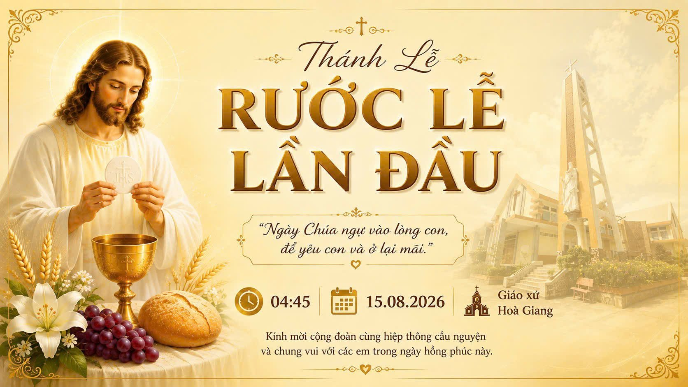
Một ngày hồng phúc khi các em nhỏ lần đầu tiên được đón Chúa Giêsu Thánh Thể vào tâm hồn. Kính mời cộng đoàn cùng hiệp thông cầu nguyện và chung vui trong ngày đặc biệt này.
15/08/2026
Xem Chi Tiết →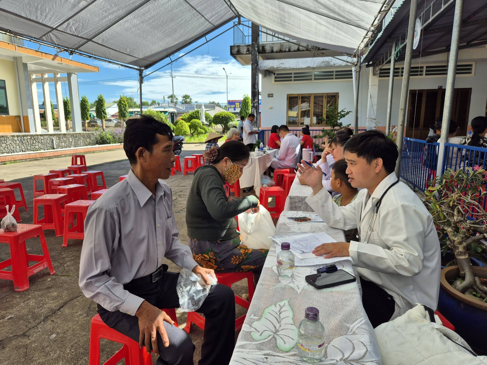
Giáo xứ Hòa Giang chào đón đoàn y, bác sĩ và nhân viên y tế đến thăm khám, tư vấn sức khỏe và cấp phát thuốc miễn phí cho người có hoàn cảnh khó khăn.
01/08/2026
Xem Chi Tiết →
Ơn Đại Xá Portiuncula là Ơn mà Thánh Phanxicô thành Assisi đã xin Chúa Giêsu ban cho các tín hữu. Cùng tìm hiểu nguồn gốc và các điều kiện để lãnh nhận ơn đại xá.
31/07/2026
Xem Chi Tiết →
Khép lại Trại hè "Mầm Xanh Tin Yêu", điều còn đọng lại không chỉ là những khoảnh khắc đẹp mà còn là biết bao tình thương và sự hy sinh âm thầm.
27/07/2026
Xem Chi Tiết →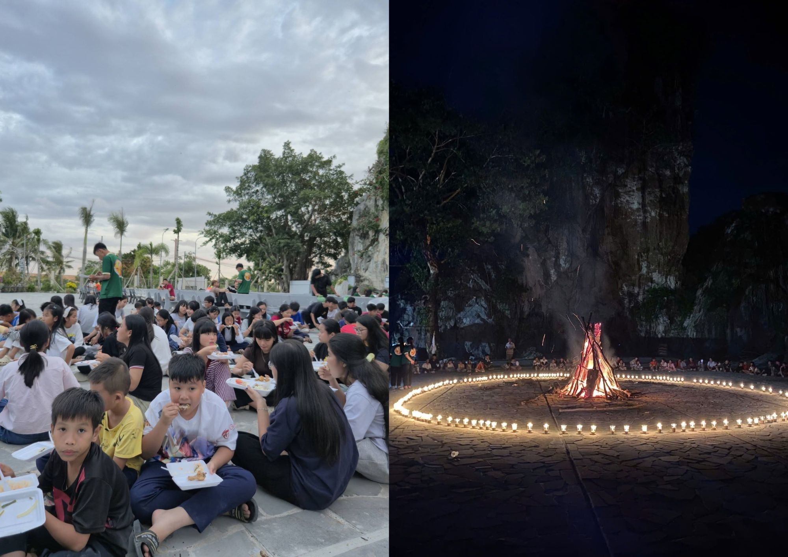
Bữa cơm chiều ấm áp và đêm lửa trại bùng cháy ngọn lửa hiệp nhất, nối kết tình huynh đệ trong ngày hội trại hè 2026.
27/07/2026
Xem Chi Tiết →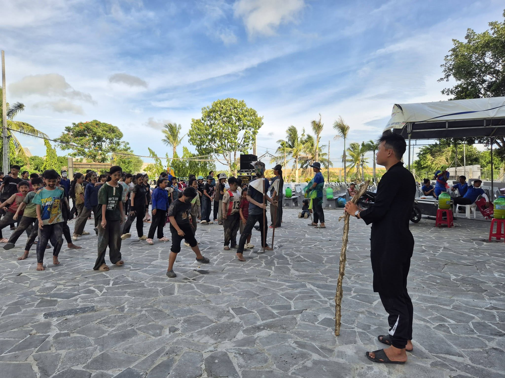
Hành trình vượt thử thách đầy gay cấn, sôi nổi và gắn kết trong chương trình Trò Chơi Lớn của trại hè 2026.
26/07/2026
Xem Chi Tiết →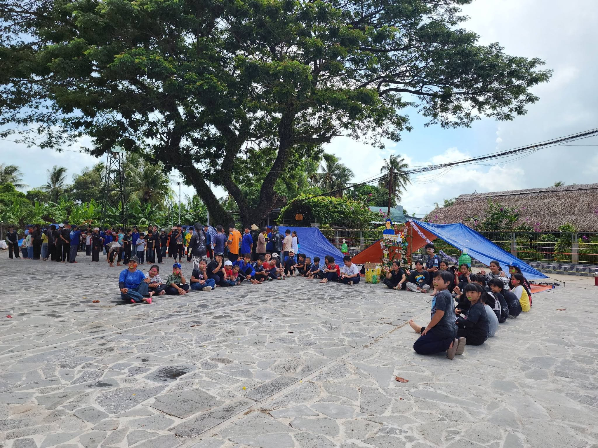
Hoạt động chấm điểm bảng trại và quây quần bên bữa cơm trưa ấm cúng trong ngày hội trại hè 2026.
26/07/2026
Xem Chi Tiết →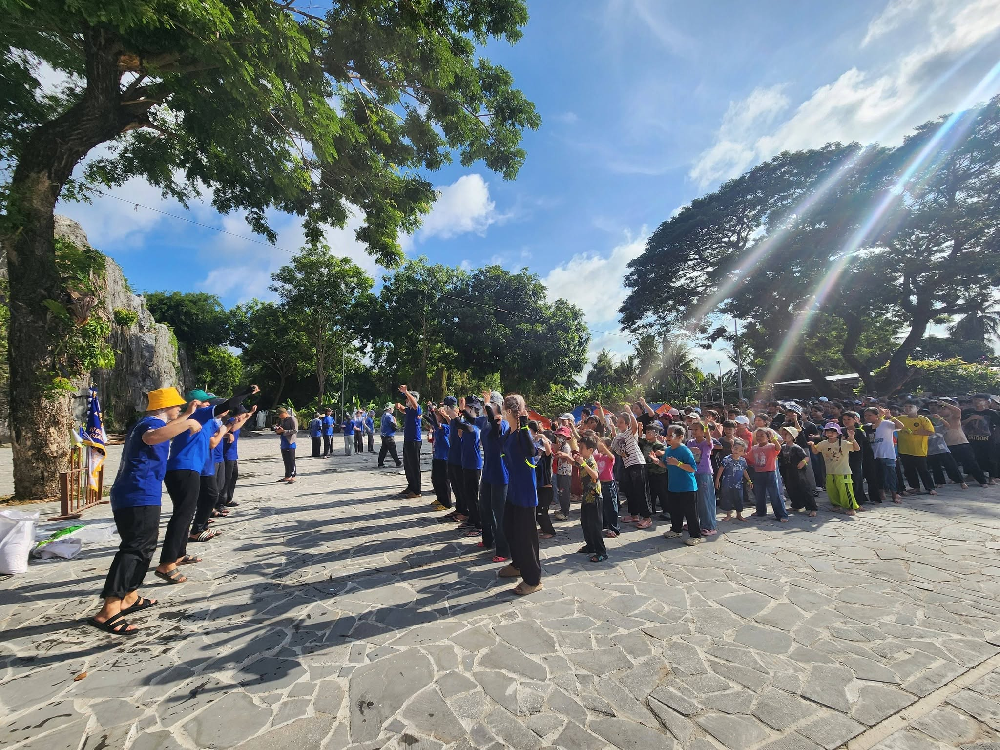
Những tiếng cười giòn tan, những màn tranh tài sôi nổi và những câu hỏi Kinh Thánh ý nghĩa đã làm nên một bầu khí tràn đầy niềm vui.
26/07/2026
Xem Chi Tiết →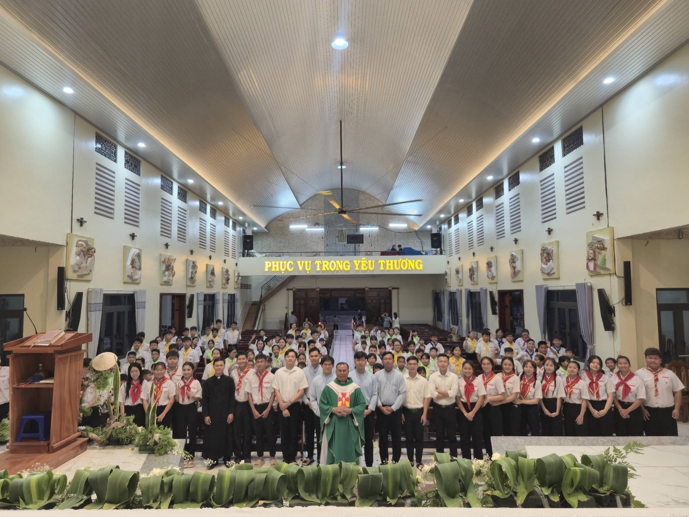
Một ngày trại hè bắt đầu bằng Thánh lễ sốt sắng, bữa sáng ấm áp và nghi thức Chào cờ đầy trang nghiêm mở đầu hành trình "Mầm Xanh Tin Yêu".
25/07/2026
Xem Chi Tiết →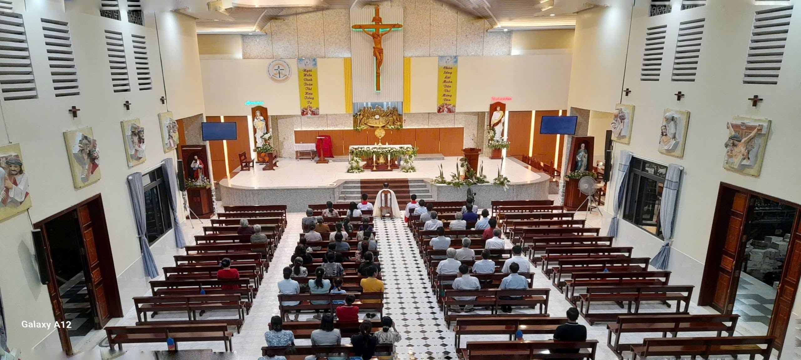
Quý thành viên Hội đồng Mục vụ Giáo xứ Hòa Giang đã cùng quy tụ tham dự giờ tĩnh tâm để chuẩn bị tâm hồn mừng kính hai Thánh Bổn mạng.
24/07/2026
Xem Chi Tiết →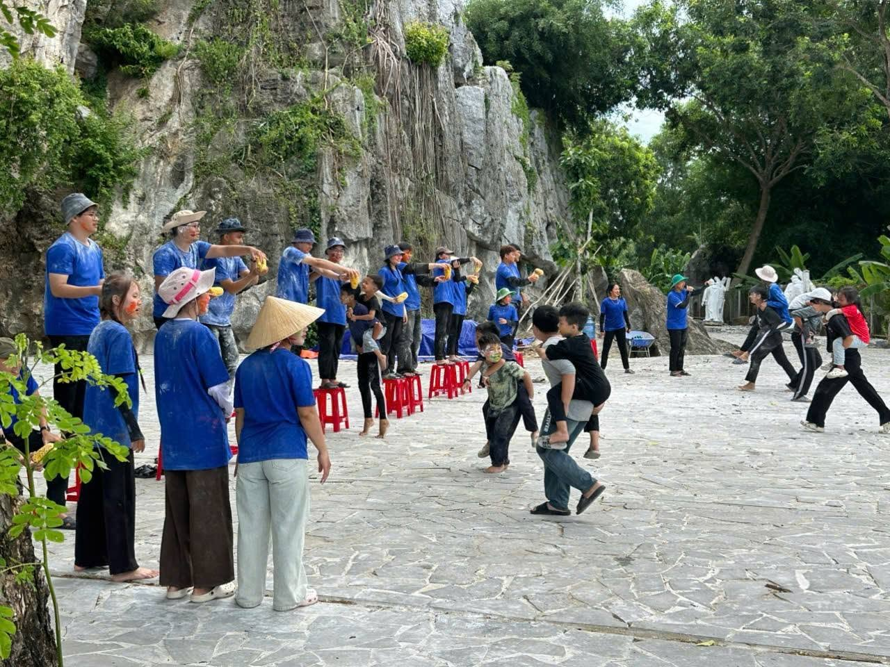
"Nhá hàng" trước vài khoảnh khắc của Trại hè 2026. Album đầy đủ đang trên đường đến!
23/07/2026
Xem Chi Tiết →
Trong bầu khí trang nghiêm và sốt sắng, Thánh lễ Rước Lễ Trọng Thể đã diễn ra, ghi dấu một cột mốc ý nghĩa trong hành trình đức tin của các em thiếu nhi.
19/07/2026
Xem Chi Tiết →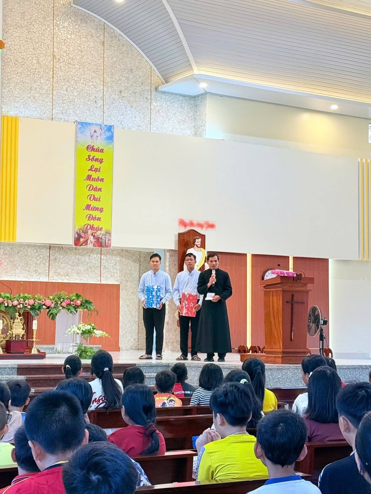
Khép lại một tháng đồng hành cùng Giáo xứ, xin chân thành cảm ơn Thầy và hai chú đã tận tâm dạy đàn, tập hát, đồng hành cùng thiếu nhi và chuẩn bị Trại hè.
18/07/2026
Xem Chi Tiết →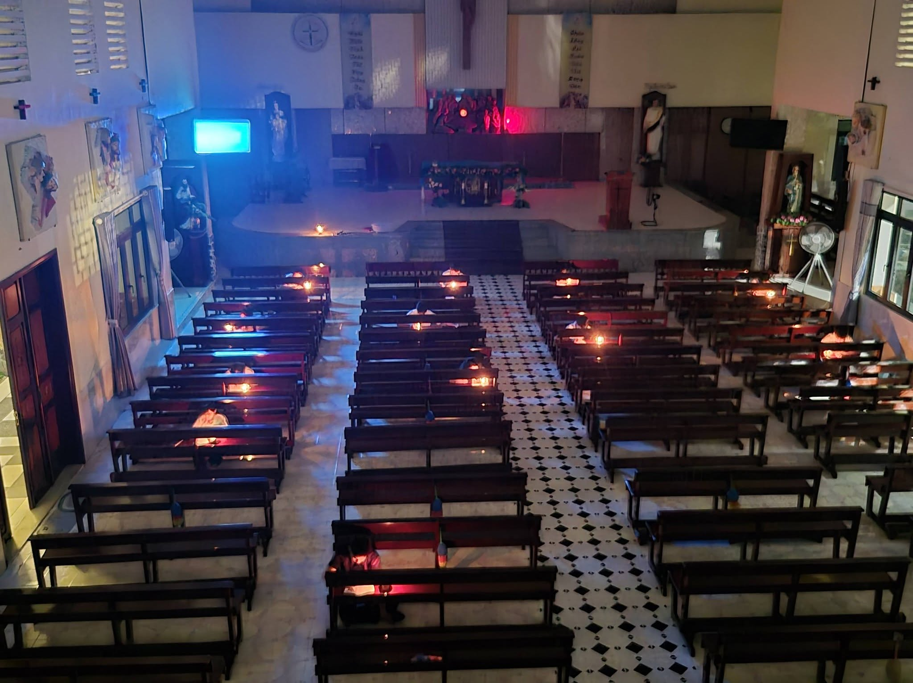
Trong bầu khí thinh lặng và linh thiêng, các em thiếu nhi đã có những giây phút lắng đọng để nhìn lại bản thân, suy ngẫm về tình yêu và sự hy sinh của ba mẹ.
17/07/2026
Xem Chi Tiết →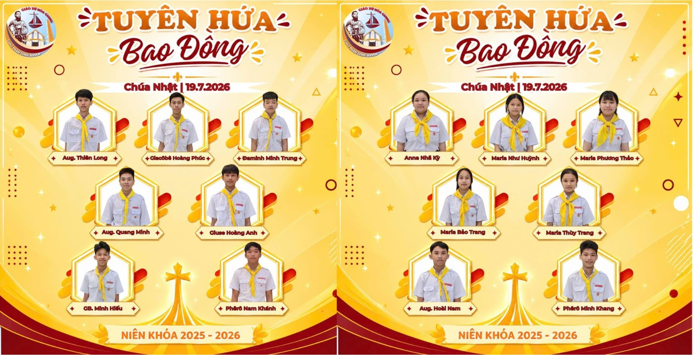
Kính mời quý cộng đoàn hiệp ý cầu nguyện và tham dự Thánh Lễ Rước Lễ Trọng Thể cho các em thiếu nhi vào lúc 07g30, Chúa Nhật 19/07/2026.
16/07/2026
Xem Chi Tiết →
Mỗi đội một màu sắc, một cá tính, nhưng cùng chung một mục tiêu: Chơi hết mình – Gắn kết hết sức – Lưu giữ thật nhiều kỷ niệm!
13/07/2026
Xem Chi Tiết →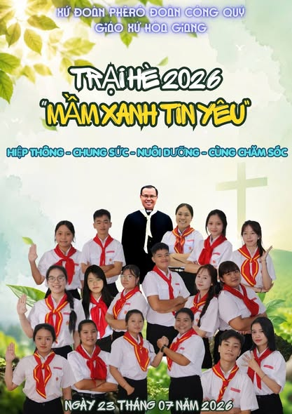
Sân khấu, trò chơi và tất cả mọi người đã sẵn sàng cho ngày hội lớn 23.07.2026. Cùng đếm ngược cho Trại Hè 2026!
12/07/2026
Xem Chi Tiết →
Quý thầy cùng các anh chị Huynh trưởng đang miệt mài, tất bật "test game", từng hoạt động và từng điều bất ngờ cho mùa hè "Mầm Xanh Tin Yêu".
11/07/2026
Xem Chi Tiết →Thông tin về quyết định bổ nhiệm và thuyên chuyển quý cha trong Giáo phận Long Xuyên tháng 07/2026.
01/07/2026
Xem Chi Tiết →
Cộng đoàn Giáo xứ Hòa Giang hiệp dâng Thánh lễ mừng 09 năm Hồng ân Linh mục của Cha sở Phanxicô Xaviê và Cha giáo Giuse.
30/06/2026
Xem Chi Tiết →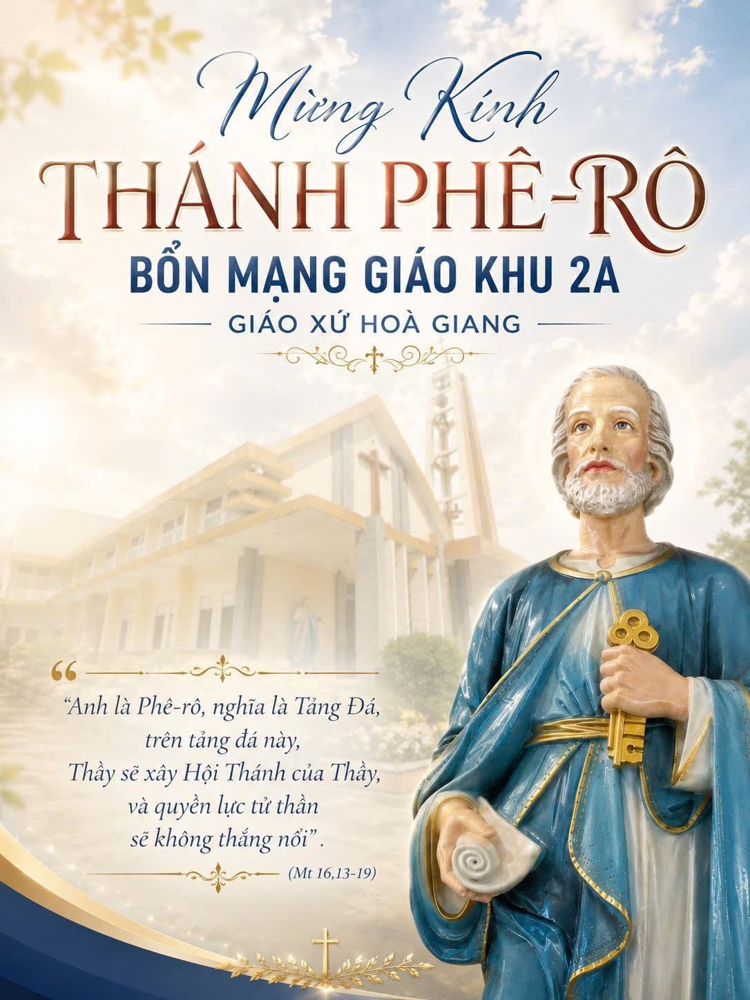
Trong bầu khí trang nghiêm và sốt sắng, Giáo khu 2A – Giáo xứ Hòa Giang đã hân hoan cử hành Thánh lễ mừng kính Thánh quan thầy Phê-rô.
29/06/2026
Xem Chi Tiết →Các trại sinh đã sẵn sàng vui chơi, chinh phục thử thách tại Đức Mẹ Núi Trầu và lớn lên trong Đức Tin chưa?
27/06/2026
Xem Chi Tiết →
Cộng đoàn Giáo xứ Hòa Giang hân hoan mừng Kỷ niệm 09 năm Hồng ân Linh mục của Cha sở Phanxicô Xaviê Trịnh Quốc Đạt.
25/06/2026
Xem Chi Tiết →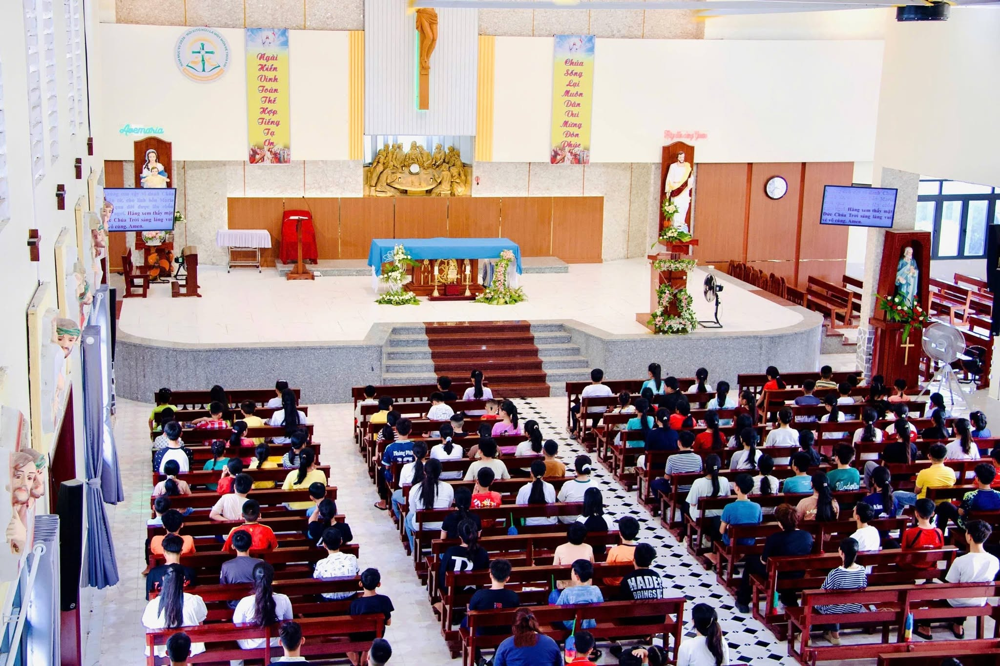
Các bạn thiếu nhi sốt sắng lần chuỗi Mân Côi dâng kính Đức Mẹ và tham gia sinh hoạt vòng tròn, vui chơi gắn kết đầy ý nghĩa.
24/06/2026
Xem Chi Tiết →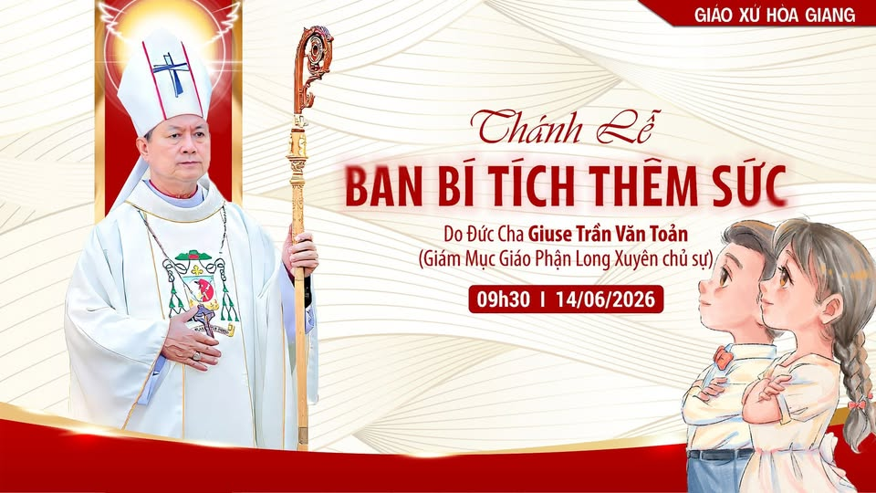
Thánh Lễ Ban Bí Tích Thêm Sức do Đức Cha Giuse Trần Văn Toản chủ sự vào lúc 09h30 ngày 14/06/2026.
11/06/2026
Xem Chi Tiết →
Giáo xứ Hòa Giang hân hoan chào đón chương trình Kinh Lý Mục Vụ và Thánh Lễ Ban Bí Tích Thêm Sức do Giáo phận Long Xuyên cử hành.
08/06/2026
Xem Chi Tiết →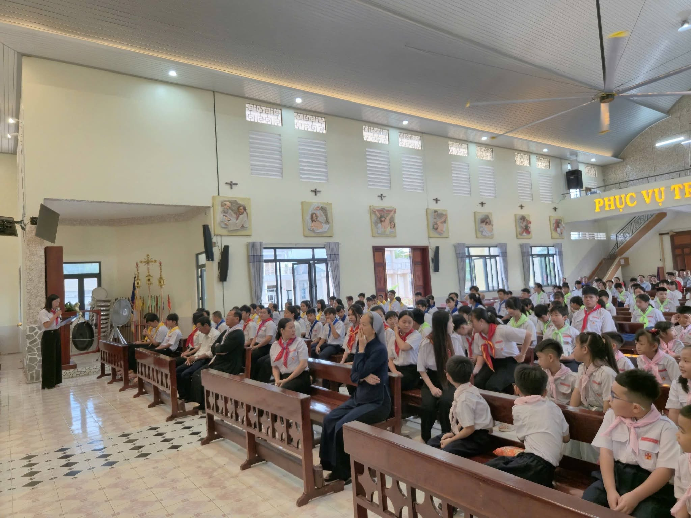
Cộng đoàn giáo xứ long trọng cử hành Thánh lễ tổng kết năm học giáo lý 2025-2026, tạ ơn Chúa vì một năm học nhiều hồng ân.
31/05/2026
Xem Chi Tiết ➔
Cộng đoàn giáo xứ long trọng cử hành thánh lễ và nghi thức bế mạc tháng kính Đức Mẹ, dâng lên Mẹ những tâm tình thành kính.
31/05/2026
Xem Chi Tiết ➔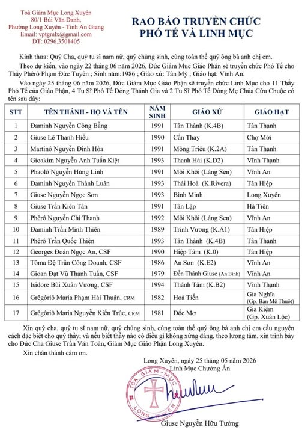
Xin cộng đoàn tiếp tục cầu nguyện cho quý Thầy, đặc biệt là Thầy Phê-rô Nguyễn Chí Thanh từng phục vụ tại Giáo xứ chúng ta.
28/05/2026
Xem Chi Tiết ➔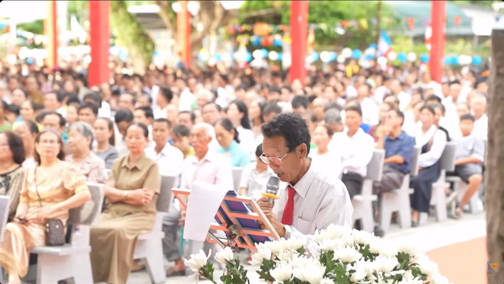
Cộng đoàn giáo xứ tham gia chuyến hành hương kính Đức Mẹ tại trung tâm Núi Trầu, sốt sắng dâng lời kinh nguyện và phó thác gia đình.
01/05/2026
Xem Chi Tiết ➔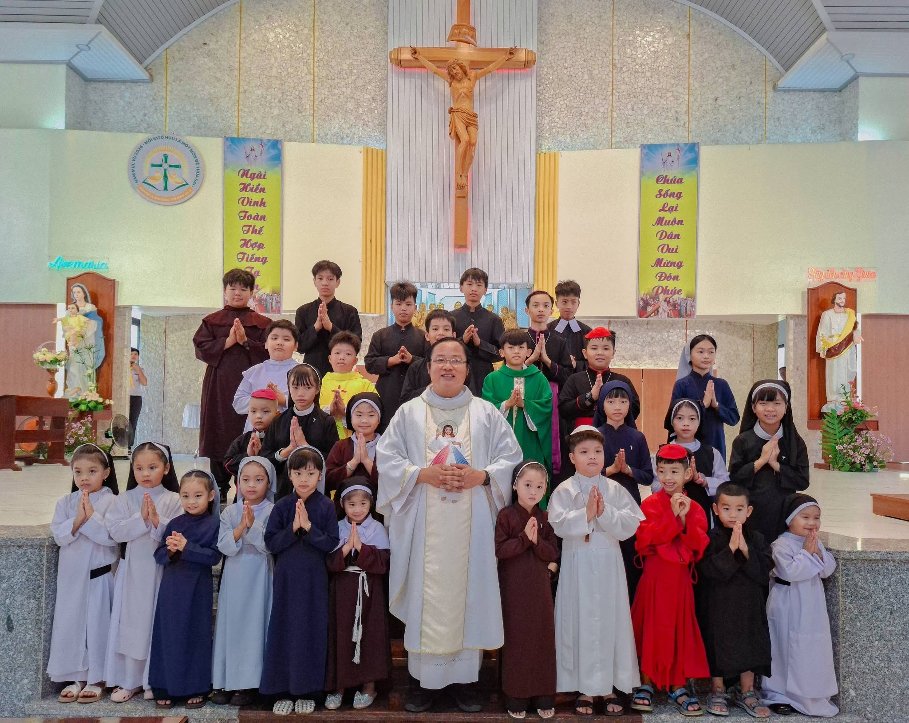
Cộng đoàn giáo xứ hiệp ý cầu nguyện cho ơn thiên triệu, mừng kính Chúa Giê-su - Mục Tử Nhân Lành luôn dẫn dắt và quan phòng đoàn chiên.
26/04/2026
Xem Chi Tiết ➔
Cộng đoàn giáo xứ long trọng cử hành Đêm Canh Thức Vượt Qua - Vọng Phục Sinh, mừng Chúa Giê-su Kitô đã khải hoàn chiến thắng tử thần.
05/04/2026
Xem Chi Tiết ➔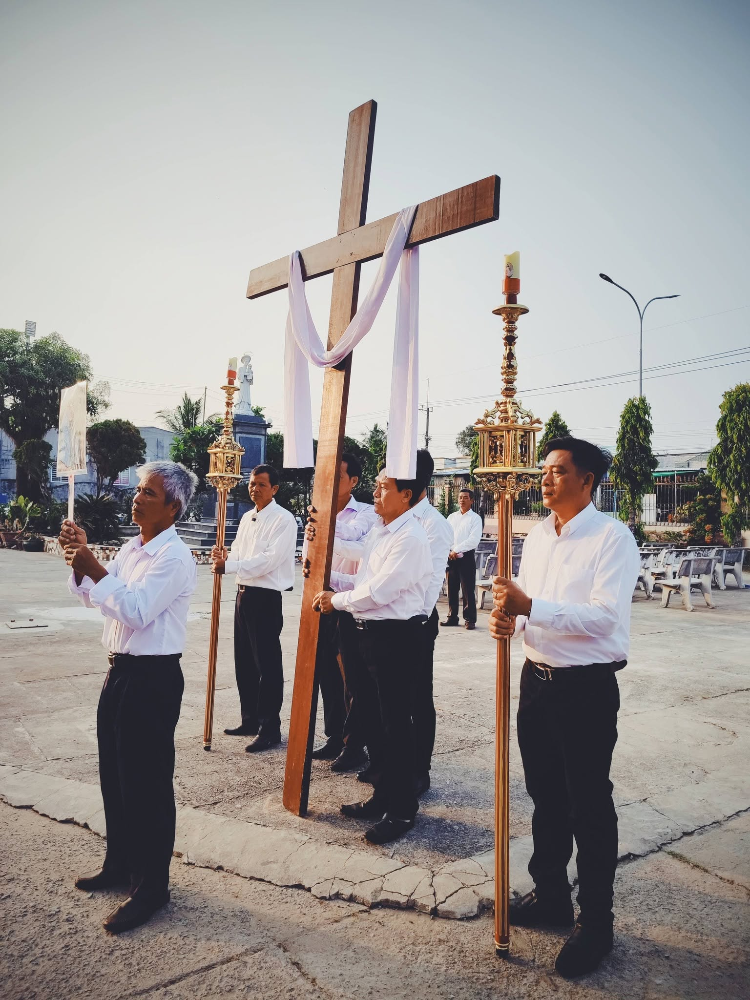
Cùng cộng đoàn hiệp thông tưởng niệm cuộc thương khó và cái chết trên thập giá của Chúa Giê-su Kitô trong ngày Thứ Sáu Tuần Thánh.
03/04/2026
Xem Chi Tiết ➔
Trong niềm tin vào Chúa Kitô Phục Sinh, Tổng Giáo phận Sài Gòn - TP.HCM trân trọng kính báo Đức Cố Hồng Y đã an nghỉ trong Chúa.
23/03/2026
Xem Chi Tiết ➔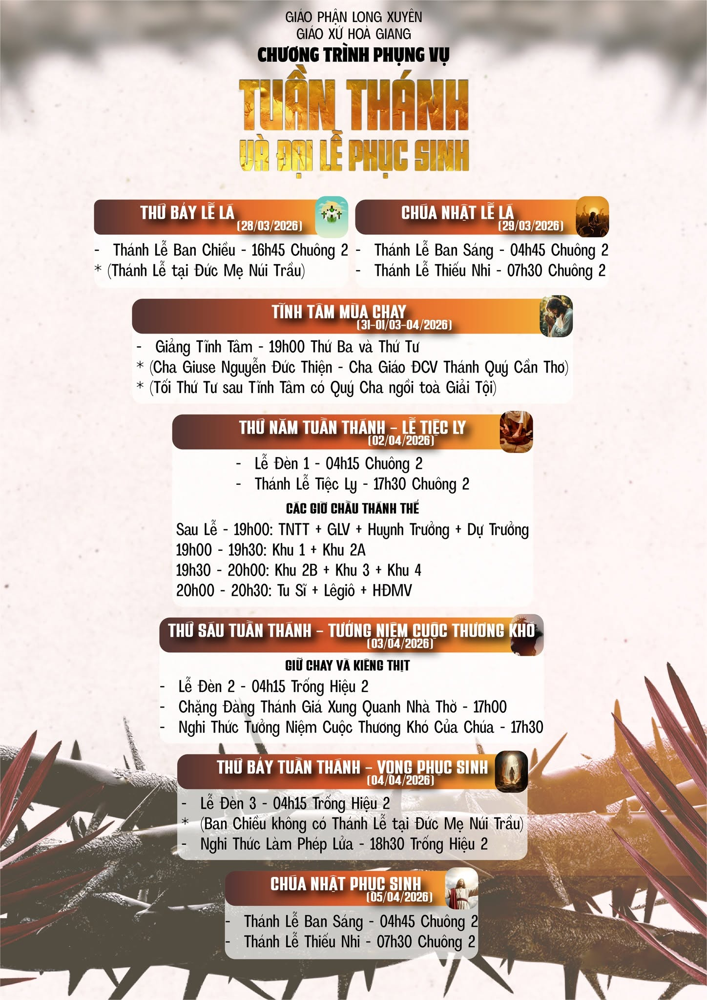
Cập nhật lịch trình chi tiết các cử hành phụng vụ trong Tuần Thánh và Đại Lễ Phục Sinh của cộng đoàn giáo xứ.
23/03/2026 Xem Chi Tiết ➔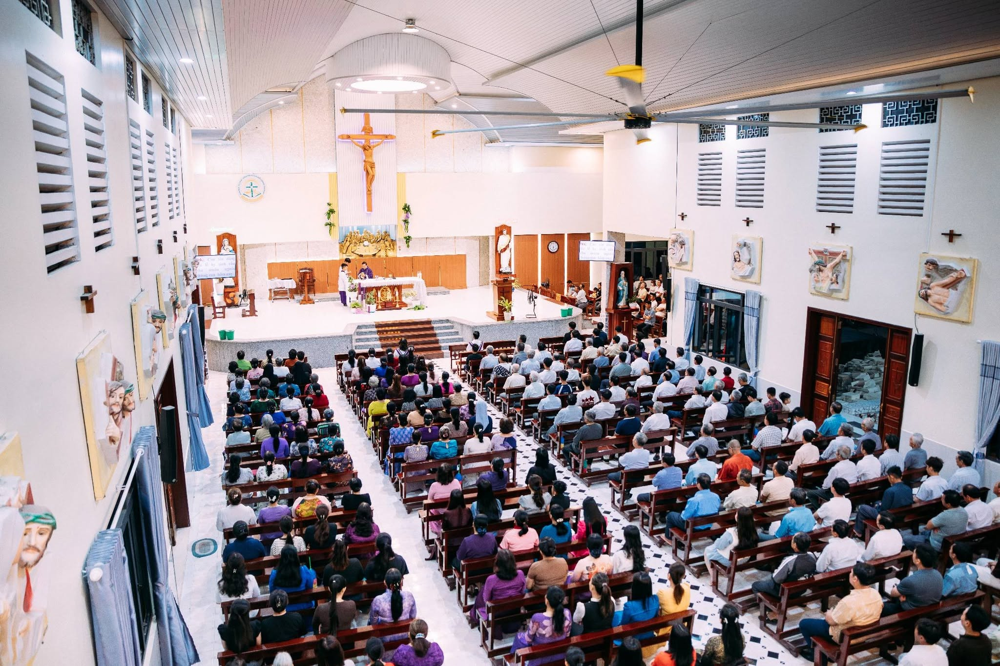
Hôm nay, cộng đoàn giáo xứ bước vào Ngày Lễ Tro, chính thức mở đầu Mùa Chay Thánh...
20/02/2026 Xem Chi Tiết →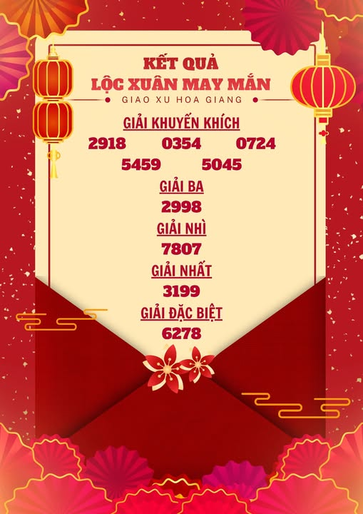
Thời gian lãnh thưởng trong vòng 7 ngày, kể từ ngày quay số (Quá thời gian 7 ngày, vé sẽ không còn giá trị để lãnh thưởng).
18/02/2026 Xem Chi Tiết →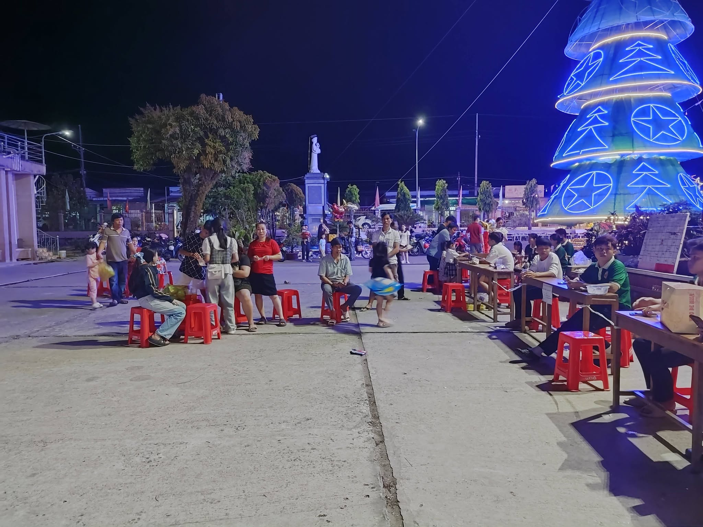
Không khí rộn ràng, vui tươi ngập tràn trong sự kiện Hội Chợ Xuân 2026 tại Giáo xứ Hòa Giang, gắn kết tình thân ái đầu năm.
17/02/2026 Xem Chi Tiết →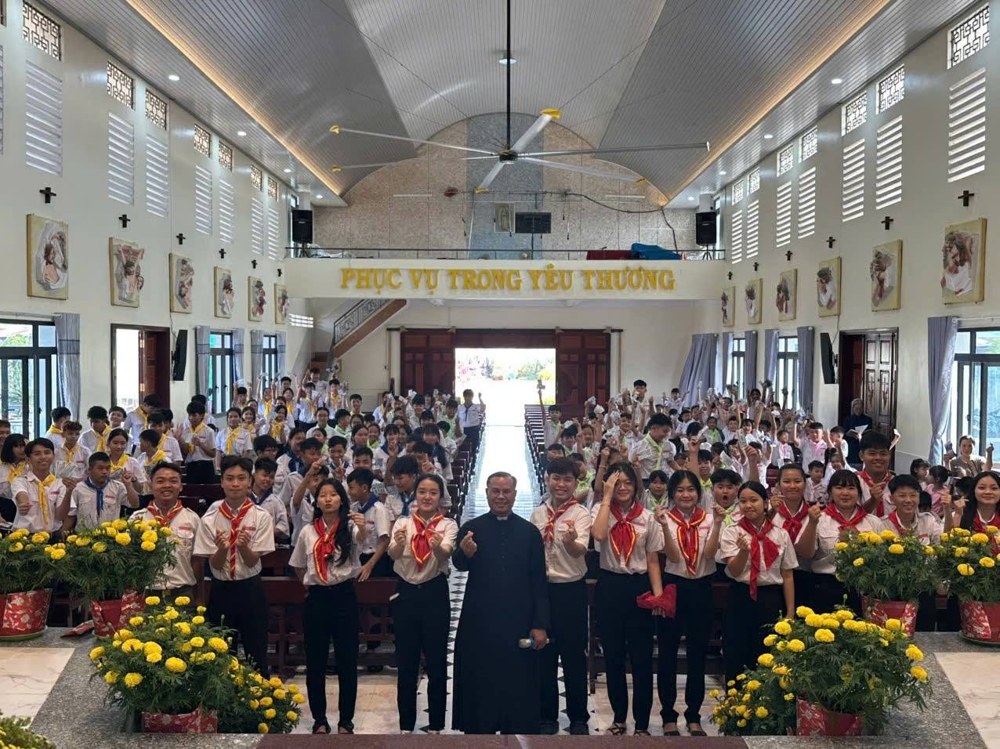
Không khí ngày đầu năm mới thêm phần ấm áp và rộn ràng khi các em thiếu nhi trong xứ đoàn tề tựu để dâng lời chúc Tết ý nghĩa lên Cha Tuyên Úy và nhận những bao lì xì đầu năm...
15/02/2026 Xem Chi Tiết →
Chị Đoàn Triều Mến và gia đình đến Giáo Xứ Hòa Giang để cùng chia sẻ những phần quà Tết cho các gia đình những người lớn tuổi và các thành viên trong đội thiện nguyện...
13/02/2026 Xem Chi Tiết →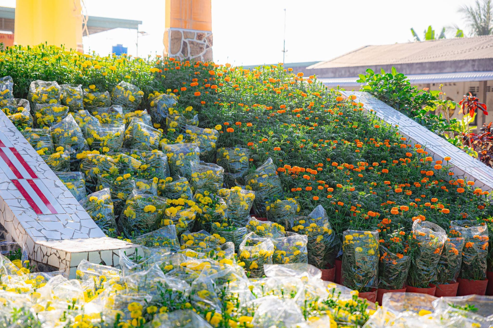
Hoa Tết đã về đến sân nhà thờ! Kính mời Quý Cộng Đoàn đến xem, lựa chọn hoặc đặt giao tận nhà để ủng hộ Xứ Đoàn...
09/02/2026 Xem Chi Tiết ➔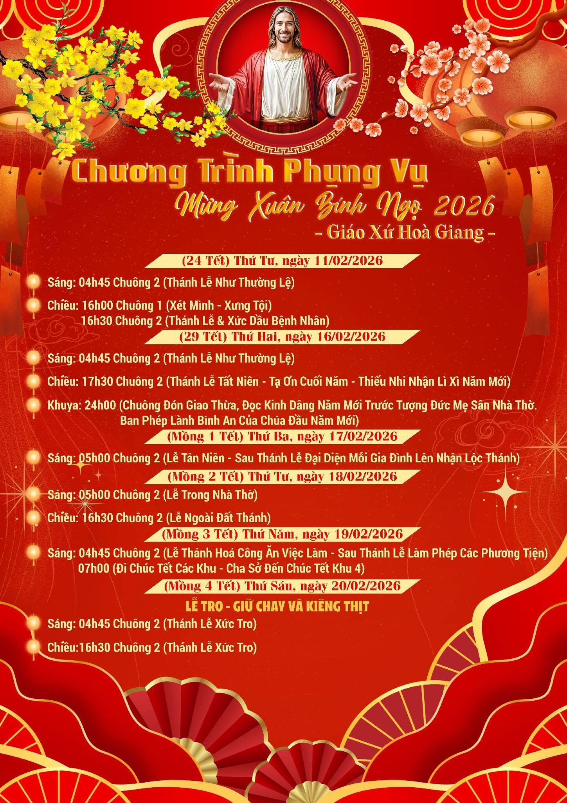
Thông báo chi tiết lịch Lễ Tất Niên, Giao Thừa, các Thánh Lễ Tân Niên và chương trình Hội Chợ Xuân...
07/02/2026 Xem chi tiết ➔
Giáo xứ Hòa Giang kết hợp cùng đoàn từ thiện của Cha Giuse...
01/02/2026 Xem chi tiết ➔
Thánh lễ do Cha Nguyên Tổng Đại Diện Luy Gonzaga Huỳnh Phước Lâm chủ sự cử hành vào lúc 09h30 ngày 25/01/2026...
20/01/2026 Xem chi tiết ➔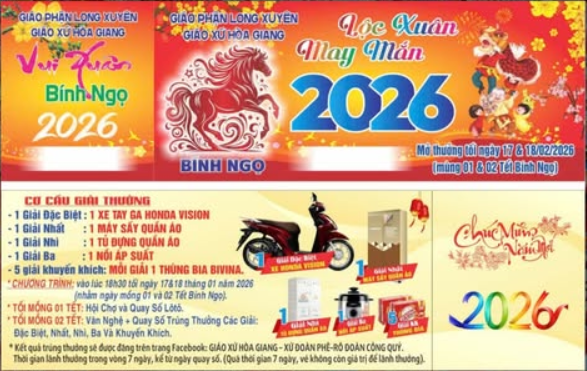
Chương trình xổ số gây quỹ đầu xuân của Xứ Đoàn Phê-rô Đoàn Công Quý với nhiều giải thưởng hấp dẫn...
16/01/2026 Xem chi tiết ➔